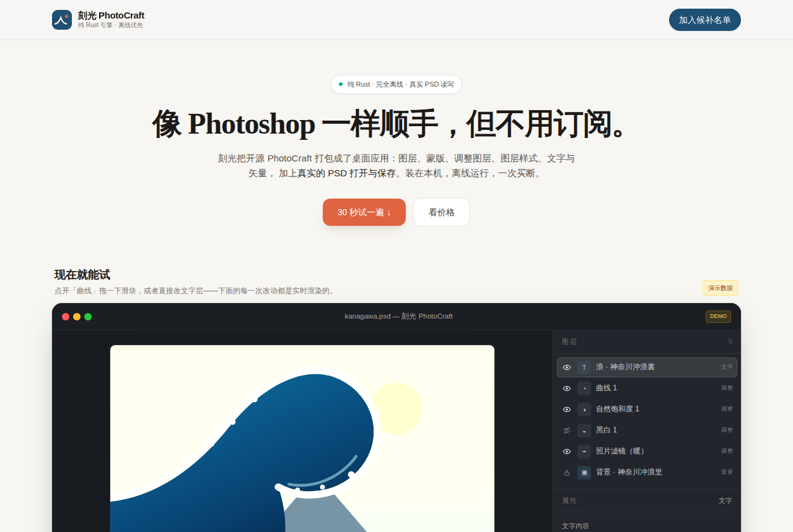

纯Rust重写的开源PS，能开PSD
storytold/photocraft · 多媒体创作Apache-2.0⭐ 71,296

storytold/photocraft 是一个用纯 Rust 从零重写的开源图像编辑器，README 里自称是 Adobe Photoshop 的"clean-room reimplementation"。它的卖点很直接：图层、蒙版、调整图层、图层样式、文字、矢量、笔刷，还有能打开和保存真实的 PSD 文件（README 说重存后 309 个 psd-tools 测试文件里有 307 个能保留渲染结果）。底层用 wgpu 做 GPU 合成，不走 Electron，所以是原生应用，不是套壳网页。
它最近火得有点吓人：22 天冲到 7 万星，日增 3000 多。这个曲线在开源圈不算正常，需要打问号。另外 README 一开头就把流量导到 getartcraft.com 这个商业站，说明团队不是纯社区玩法。
产品机会在于"不想订阅 Adobe、但工作流里绕不开 PSD"这群人。做成免安装的桌面版，买断制授权，主打离线、PSD 无缝、快捷键和 PS 一致，对自由摄影师和小设计工作室是有吸引力的。前提是完成度和稳定性经得起真实项目检验，而这一点从 README 还没法确认。
今日 Top 5
| # | 项目 | 传播 | 创业 | 综合 |
|---|---|---|---|---|
| 1 | storytold/photocraft | 8.67 | 6.95 | 7.13 |
| 2 | debpalash/VoiceStudio | 8.33 | 4.95 | 7.11 |
| 3 | heygen-com/hyperframes | 8.67 | 7.15 | 7.11 |
| 4 | akitaonrails/ai-memory | 7.33 | 7.4 | 7.03 |
| 5 | stablyai/orca | 7.67 | 5.65 | 6.94 |